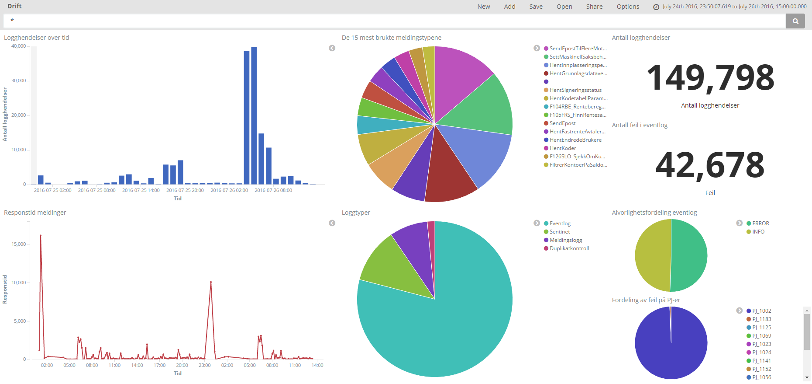
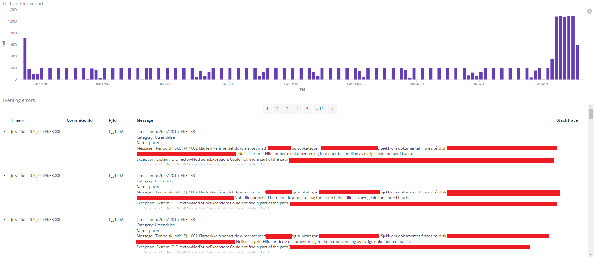
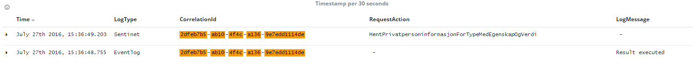
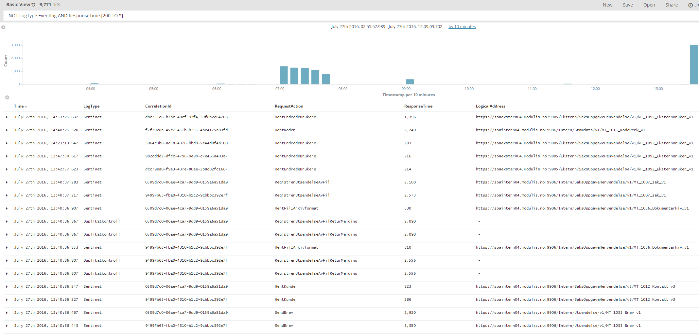

class: front-page # Lånekassen Trondheim ## Logging Peder og Håvard 2016 ??? ## Håvard --- class: agenda # Agenda * Dagens situasjon * Løsning * Implementasjon * Resultat ??? ## Håvard --- class: middle center # Dagens situasjon --- class: center middle  ??? ## Peder Klient som bruker ei Lånekassen nettside. Tjeneren jobber med forespørselen --- class: center middle  ??? ## Peder Når tjeneren jobber så blir det laget logger som tjeneren lagrer i sin lokale Eventlog. Tjeneren kontakter også fleire noder som utfører diverse arbeid. I tillegg til å lagre sitt arbeid på egne Eventlogger, blir også meldingane mellom forskjellige noder loggført i SQL-databasar --- class: center middle  ??? ## Peder For å finne feil og viktig informasjon som har blitt logget må man leite i eit stort område. Dette kan være vanskelig og treigt. Og liten mulighet for å finne sammenhenger mellom forskjellige feil på flere noder. --- class: middle center # Vår løsning --- class: center middle  ??? ## Håvard Kvar enkelt node sender sin Eventlog til vår node ved bruk av ein forwarder. Vi har fungerende konfigurasjon for både WinLogBeat og NxLog, slik at Lånekassen kan bruke den dei ønsker. Vår node utfører også forespørsler mot databasene for å hente relevant informasjon. --- class: center middle ### Logstash - ElasticSearch - Kibana  ??? ## Håvard Så kvar gjer vår ELK-stack node? Logstash tar i mot alle hendelsar som er sendt inn og "fikser" på dei. Dei blir omformet til eit dataformat som elasticsearch kan lese og søke i. Elasticsearch fungere som ein slags database med ekstra funksjonalitet for søking. Kibana viser fram informasjonen vi har lagra i forskjellige dashboards og søkeresultat. --- class: middle center # Implementasjon --- #Logstash Blir konfigurert i configfiler ``` input { ... } ``` ``` filter { ... } ``` ``` output { ... } ``` ??? ## Peder Input viser kvar logstash enten skal motta informasjon eller kvar den skal hente informasjonen. Filter gjer om informasjonen til det formatet vi ønsker oss i elasticsearch. Output viser kvar informasjonen skal lagrast. Har mange fleire funksjoner utover elasticsearch, som stdout eller i filer. --- class: cols two #Logstash .col[ ``` input{ beats { port => 5044 } } filter { json { source => "RawMessage" } } output { elasticsearch { hosts => ["localhost:9200"] } } ``` ] .col[ ```json { "_index": "logstash-2016.07.26", "_source": { "HostAddress": "APPLIKASJON04.modulis.no", "RawMessage": "Feilmelding i jsonformat", "LogMessage": "Ugyldig epostadresse funnet" "LogName": "Modulis", "LogType": "Eventlog", "Severity": "INFO", "Timestamp": "2016-07-26T10:30:01.000Z", "HostMachine": "APPLIKASJON04", "JobName": "PJ_1183" } } ``` ] ??? ## Peder ## Svært simpel konfigurasjon av logstash Tar i mot informasjon fra beats på port 5044. Omgjør eit av felta i hendelsen fra json til riktig format. Sender hendelsen til elasticsearch På høgre side: Simplifisert rawdata av ei hending slik den ser ut når den blir sendt til elasticsearch. Mykje av den "uinteressante" informasjonen er fjerna. --- class:split # FrontEnd-Logging Logging av feil hos klient. ??? ## Håvard FrontEndErrorLog beskrivelse: FrondEndErrorLog hjelper ein utvikler av webapplikasjoner til å dokumentere feil på klientsiden. Pakken gir med ein javascriptfil som skal i fremtiden injectes i MVC lifecyclen, slik at klient alltid har scriptet. Scriptet gir beskjed til pakkens egen controller dersom det oppstår feil, og controlleren logger dette i Eventloggen. --  --- # FrontEnd-Logging ```javascript window.onerror = function (message, url, lineNumber, column, error) { ... } ``` ??? Benytter window.onerror Ein funksjon som fanger opp alle feil. -- ```C# private readonly ILogger _logger = LogManager.GetLogger(typeof(FrontEndErrorLogController)); [HttpPost] public void ErrorLogging(ErrorModel param) { _logger.Fatal(param.ToJSONString()); } ``` ??? Egen controller som tar i mot alle feil. Eventuelt om tid: litt om feilspamming, verktøy for hærverk. --- class: split # Correlation ID * Logging skjer mange forskjellige steder * Kan ikke uten videre vite hvilke logg-innlegg som hører sammen  ??? ## Peders På bildet: Hvis server 1 gjer ein mangelfull forespørsel til server 2, og det resulterer i feil frå begge serverane, så klarer ein ikkje nødvendigvis å sjå at desse feila hører sammen. Dette er spesielt eit problem om det skjer masse "requests" samtidig, slik at det blir masse hendelsar i loggen. --- class: split # Correlation ID * Logging skjer mange forskjellige steder * Kan ikke uten videre vite hvilke logg-innlegg som hører sammen * Løsning: Generere og sende videre en korrelasjons-ID for hvert "kall"  ??? # Problem På bildet: Hvis server 1 gjer ein mangelfull forespørsel til server 2, og det resulterer i feil frå begge serverane, så klarer ein ikkje nødvendigvis å sjå at desse feila hører sammen. Dette er spesielt eit problem om det skjer masse "requests" samtidig, slik at det blir masse hendelsar i loggen. # Løysing Generere og sende med en "correlation ID" som også blir skrive til loggen. Når vi så finn ein feil, kan vi søke på den samme "correlation ID"-en, og finne heile stacktrace-en av kall som har blitt gjort --- class: middle center # Resultat ??? ## Kan ikkje vise live demo ## fordi vi jobbar med sensitive data, ## så då blir det bilde i stadenfor! --- # Dashboards  ??? ## Peder Oppe til venstre: antall loggføringer over tid Midten oppe: Kva type jobb som blir utført Oppe til høgre: antall loggføringer i det bestemte tidsintervallet Nede til venstre: gjennomsnittlig responstid på samme periode Midten nede: kvar loggføringen kjem fra Nede til høgre: Eventlog informasjon --- # Dashboards  ??? ## Håvard Dashboard for feil i spesifikk tidsperiode fra eventlog --- # Korrelerte hendelser Søk etter alle hendelser som tilhører samme kall / *unit of work*  ??? ## Håvard Logghendelser fra ulike systemer, for samme kallkjede Eventlog er fra web-applikasjonen som en kunde surfer på Sentinet-loggen logger meldinger som går mellom ulike tjenester internt i Lånekassen sine system --- # Søk i logger  ??? ## Håvard Avansert søk responstid over 200 not eventlog --- class: middle center # Takk for oss!